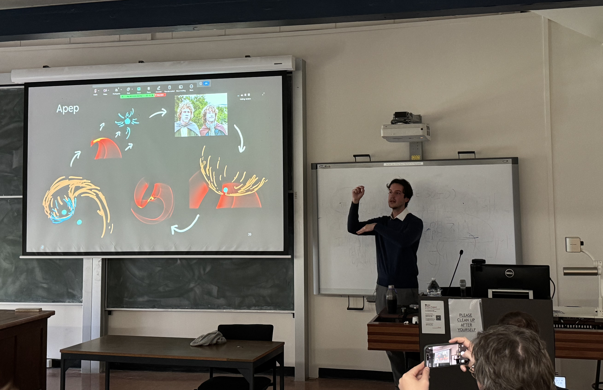
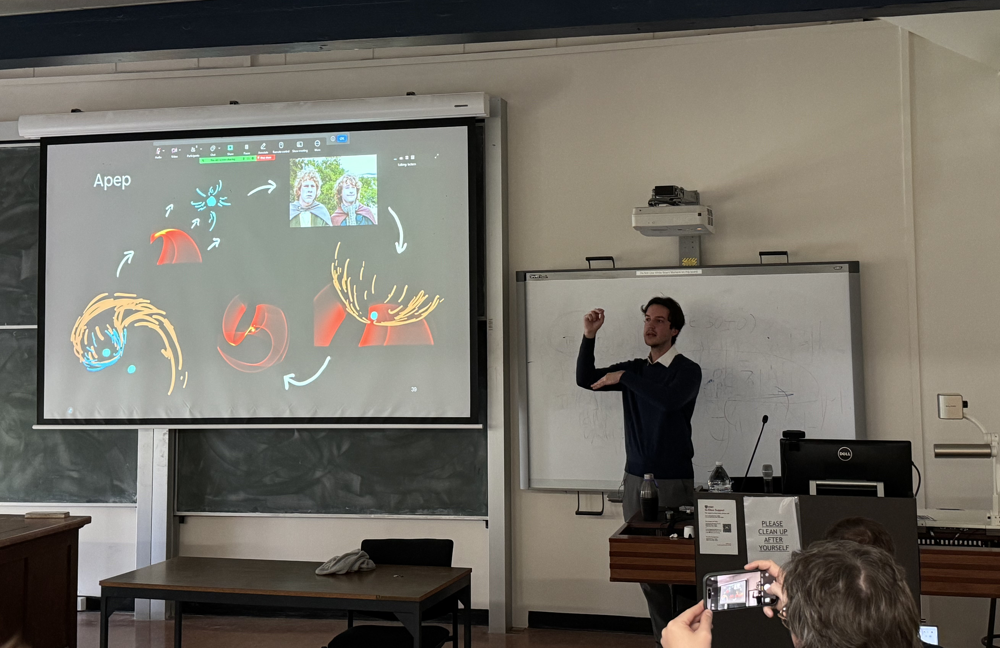

Talks
Here are some links to slides I've made or videos for talks I've given. The entries that have (r.js) are designed to be viewed in a web browser; no download needed!
Sydney Institute for Astronomy (SIfA) Seminar, University of Sydney, May 2025 — The Serpent Eating Its Own Tail — Slides (.pptx), or (.pdf) equivalent (no animations)
CSIRO Co-learnium, Online, Jan 2025 — A One-Stop Shop for Colliding Wind Binaries — Slides (r.js), or Video (.mp4)

Cosmology Talks Explainer, Online, Jun 2024 — Dark Energy Survey Supernovae - Precisely Measured Time Dilation from Universe's Expansion — YouTube
Sydney Institute for Astronomy (SIfA) Seminar, University of Sydney, May 2025 — The Serpent Eating Its Own Tail — Slides (.pptx), or (.pdf) equivalent (no animations)
CSIRO Co-learnium, Online, Jan 2025 — A One-Stop Shop for Colliding Wind Binaries — Slides (r.js), or Video (.mp4)
